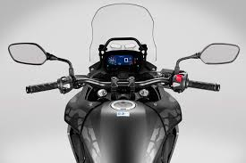
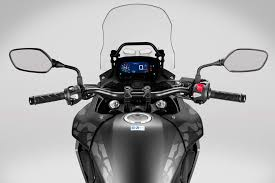

BMW R 1250 GS


20.000–30.000 €
Moto trail premium con motor bóxer de 1.254 cc y 136 CV. Muy cómoda para viajes largos, potente y con tecnología avanzada (ShiftCam). Ideal para carretera y rutas de aventura.
18.000–30.000 €
Versión más viajera de la GS, con depósito más grande y mejor protección contra el viento. Perfecta para largas expediciones y uso mixto carretera/off-road.
Yamaha MT-07


7.000–9.000 €
Naked ligera y muy manejable con motor de 689 cc. Conocida por su agilidad y bajo consumo, ideal para ciudad, carretera y conductores de todos los niveles.


Trail grande de 1.200 cc orientada a viajes largos y aventura. Cómoda, robusta y con transmisión por cardán, pensada para recorrer muchos kilómetros.
Honda CB 500 X
 

3.600–6.200 €
Trail ligera y económica con motor de 471 cc. Muy fácil de conducir, ideal para ciudad y escapadas. Perfecta como primera moto “trail”.


Mítica moto de aventura con motor V-twin de 750 cc. Conocida por su fiabilidad y capacidad para viajar por carretera y caminos, una leyenda del mundo trail.